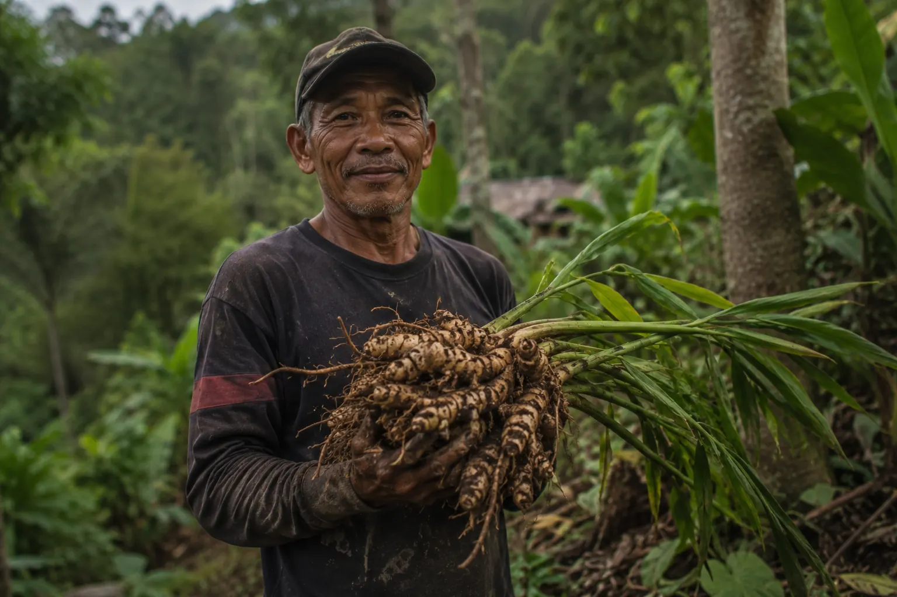

Le Carnet de Yogyakarta
Quatre façons de préparer le jamu, transmises sur les marchés de Yogyakarta. Aucune n'est la bonne façon — toutes le sont.

Le visage derrière le sachet
Chaque formule JAMU Java est une synergie de plantes pilées ensemble à Yogyakarta — jamais un ingrédient isolé, jamais un actif extrait en laboratoire. Le jamu est inscrit au Patrimoine Culturel Immatériel de l'UNESCO depuis 2023. Nous travaillons directement avec de petits producteurs locaux, sans intermédiaire, pour une traçabilité totale.
La carte de notre sourcing
Et maintenant ?
Format découverte — 6 préparations, 6,90€.
Découvrir le Premier Rituel